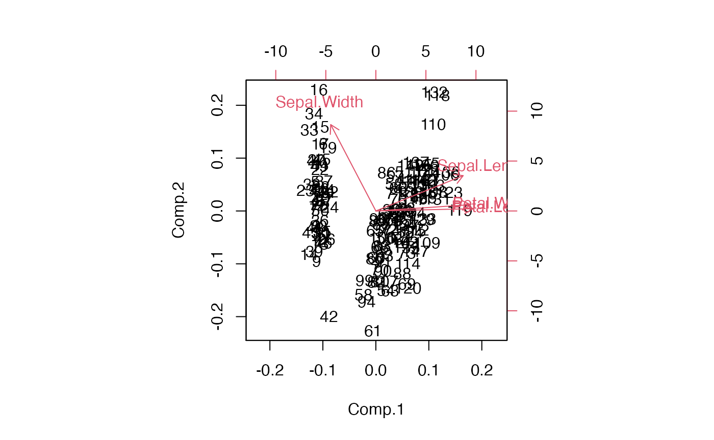
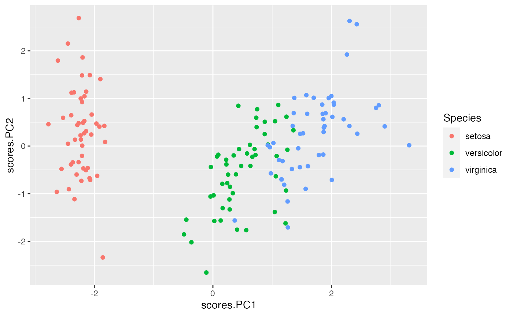
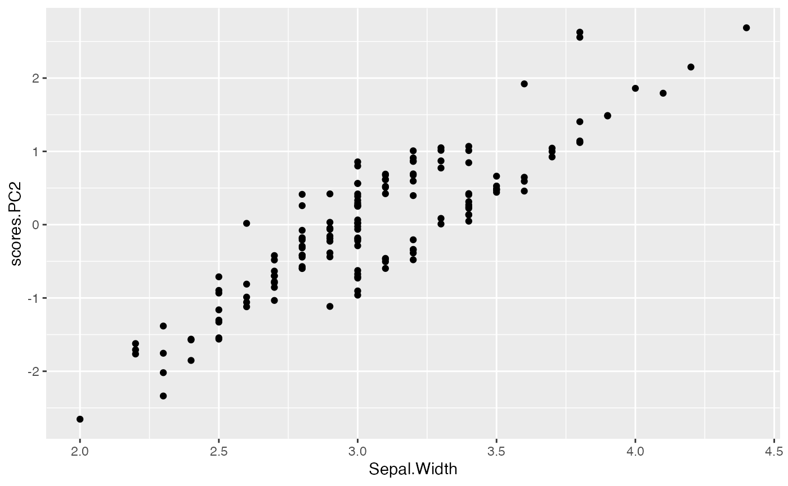
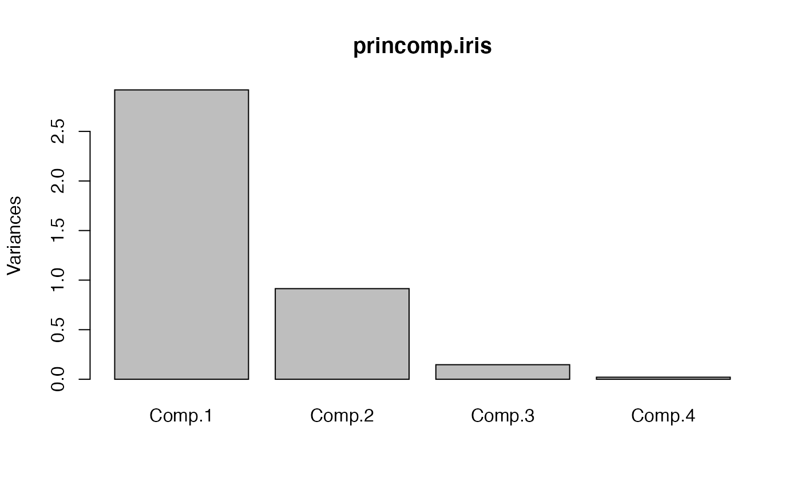
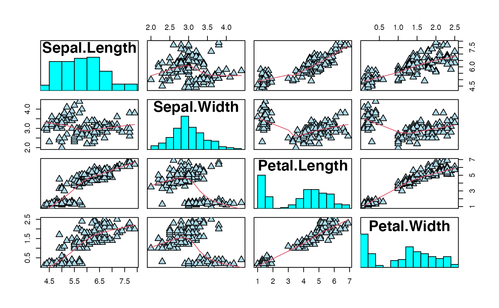
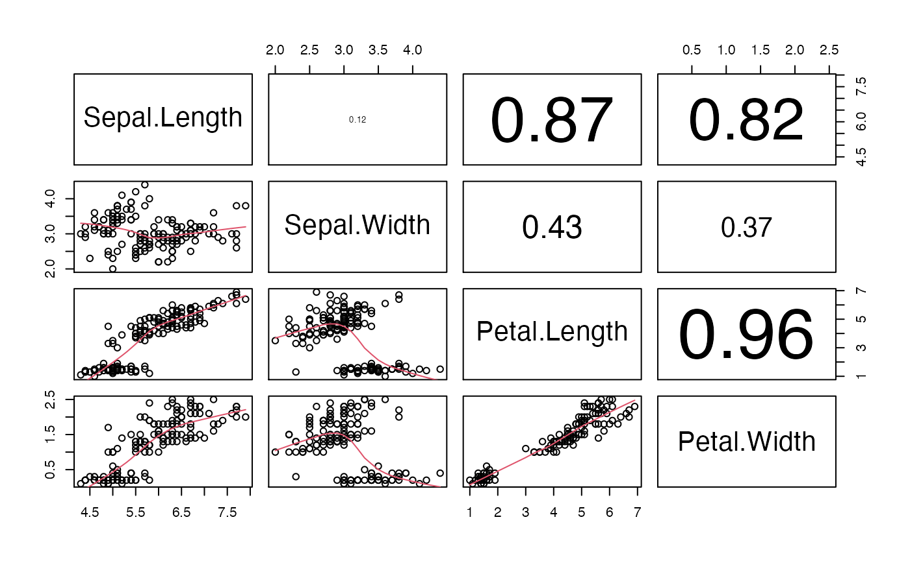
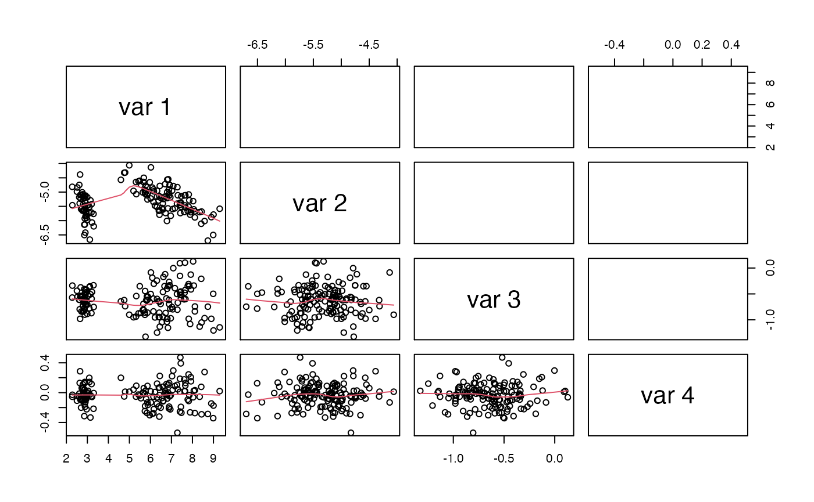
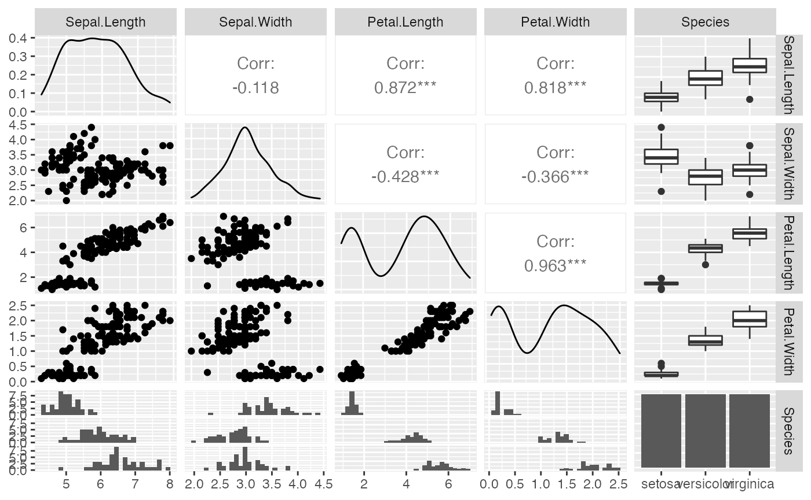

PCA_tutorial_iris_data-inc_PCA_by_hand.Rmd
library(compbio4all)From R’s help file: >“This famous (Fisher’s or Anderson’s) iris data set gives the measurements in centimeters of the variables sepal length and width and petal length and width, respectively, for 50 flowers from each of 3 species of iris. The species are Iris setosa, versicolor, and virginica.”
pairs(iris[,-5],lower.panel = NULL)
library(scatterplot3d)
scatterplot3d::scatterplot3d(iris$Sepal.Length, # x axis
iris$Sepal.Width, # y axis
iris$Petal.Length, # z axis
)Two steps
prcomp.iris <- prcomp(~ Sepal.Length +
Sepal.Width +
Petal.Length +
Petal.Width,
data = iris)
princomp.iris <- princomp(~ Sepal.Length +
Sepal.Width +
Petal.Length +
Petal.Width,
data = iris,
cor = TRUE,
scores = TRUE)Difference is minor; appears to mostly be due to scaling, not a different answer.
biplot(princomp.iris)
scores.PC1 <- princomp.iris$scores[,"Comp.1"]
scores.PC2 <- princomp.iris$scores[,"Comp.2"]Plotting by hand; note that axes aren’t standardized/scaled the same way as biplot(). To fix this just need to appropriate transformation
plot(scores.PC1,
scores.PC2)Add scores to raw data
iris2 <- iris
iris2$scores.PC1 <- scores.PC1
iris2$scores.PC2 <- scores.PC2Plot in ggplot with species color coded
library(ggplot2)
library(cowplot)
qplot(x = scores.PC1,
y = scores.PC2,
color = Species,
data = iris2)
THe biplot indicates that Sepal.Width falls mostly along the y axis
biplot(princomp.iris)This implies that it is being represent by PC2 and highly correlated with it. We can plot the raw data for sepal with against PC2
qplot(y = scores.PC2,
x = Sepal.Width,
data = iris2)
The labels might be hard to read, but petal width and petal length are pointing to the right along the x axis. They are therefore correlated with PC1
PCA creates as many new/synthetic/latent PCs as there are variables. Typically the first 2 capture most of the interesting features of the data, but sometimes the additional ones are also useful. A screeplot can be used to determine when PCs are becoming less informative. when there is a steep declien between PCs, there is still information to be gained by looking at them. The following plot implies the PC3 might be useful to look at, but not PC4. There’s a stepp drop from 1 to 2, and 2 to 3, but not 3 to 4.

#summary on prcomp
summary(prcomp.iris)
#> Importance of components:
#> PC1 PC2 PC3 PC4
#> Standard deviation 2.0563 0.49262 0.2797 0.15439
#> Proportion of Variance 0.9246 0.05307 0.0171 0.00521
#> Cumulative Proportion 0.9246 0.97769 0.9948 1.00000
summary(prcomp.iris, loadings = TRUE) #doesn't do anything
#> Warning: In summary.prcomp(prcomp.iris, loadings = TRUE) :
#> extra argument 'loadings' will be disregarded
#> Importance of components:
#> PC1 PC2 PC3 PC4
#> Standard deviation 2.0563 0.49262 0.2797 0.15439
#> Proportion of Variance 0.9246 0.05307 0.0171 0.00521
#> Cumulative Proportion 0.9246 0.97769 0.9948 1.00000
#summary on princomp, the more versitile command
summary(princomp.iris)
#> Importance of components:
#> Comp.1 Comp.2 Comp.3 Comp.4
#> Standard deviation 1.7083611 0.9560494 0.38308860 0.143926497
#> Proportion of Variance 0.7296245 0.2285076 0.03668922 0.005178709
#> Cumulative Proportion 0.7296245 0.9581321 0.99482129 1.000000000
summary(princomp.iris, #see ?summary.princomp for details
loadings = TRUE)
#> Importance of components:
#> Comp.1 Comp.2 Comp.3 Comp.4
#> Standard deviation 1.7083611 0.9560494 0.38308860 0.143926497
#> Proportion of Variance 0.7296245 0.2285076 0.03668922 0.005178709
#> Cumulative Proportion 0.7296245 0.9581321 0.99482129 1.000000000
#>
#> Loadings:
#> Comp.1 Comp.2 Comp.3 Comp.4
#> Sepal.Length 0.521 0.377 0.720 0.261
#> Sepal.Width -0.269 0.923 -0.244 -0.124
#> Petal.Length 0.580 -0.142 -0.801
#> Petal.Width 0.565 -0.634 0.524
#summary with additional commands
summary(princomp.iris, #see summary.princomp() for details
loadings = TRUE,
cutoff = 0.1,
digits = 1)
#> Importance of components:
#> Comp.1 Comp.2 Comp.3 Comp.4
#> Standard deviation 1.7083611 0.9560494 0.38308860 0.143926497
#> Proportion of Variance 0.7296245 0.2285076 0.03668922 0.005178709
#> Cumulative Proportion 0.7296245 0.9581321 0.99482129 1.000000000
#>
#> Loadings:
#> Comp.1 Comp.2 Comp.3 Comp.4
#> Sepal.Length 0.521 0.377 0.720 0.261
#> Sepal.Width -0.269 0.923 -0.244 -0.124
#> Petal.Length 0.580 -0.142 -0.801
#> Petal.Width 0.565 -0.634 0.524structure of PCA output
#structure of PCA output
str(prcomp.iris)
#> List of 6
#> $ sdev : num [1:4] 2.056 0.493 0.28 0.154
#> $ rotation: num [1:4, 1:4] 0.3614 -0.0845 0.8567 0.3583 -0.6566 ...
#> ..- attr(*, "dimnames")=List of 2
#> .. ..$ : chr [1:4] "Sepal.Length" "Sepal.Width" "Petal.Length" "Petal.Width"
#> .. ..$ : chr [1:4] "PC1" "PC2" "PC3" "PC4"
#> $ center : Named num [1:4] 5.84 3.06 3.76 1.2
#> ..- attr(*, "names")= chr [1:4] "Sepal.Length" "Sepal.Width" "Petal.Length" "Petal.Width"
#> $ scale : logi FALSE
#> $ x : num [1:150, 1:4] -2.68 -2.71 -2.89 -2.75 -2.73 ...
#> ..- attr(*, "dimnames")=List of 2
#> .. ..$ : chr [1:150] "1" "2" "3" "4" ...
#> .. ..$ : chr [1:4] "PC1" "PC2" "PC3" "PC4"
#> $ call : language prcomp(formula = ~Sepal.Length + Sepal.Width + Petal.Length + Petal.Width, data = iris)
#> - attr(*, "class")= chr "prcomp"
str(princomp.iris)
#> List of 7
#> $ sdev : Named num [1:4] 1.708 0.956 0.383 0.144
#> ..- attr(*, "names")= chr [1:4] "Comp.1" "Comp.2" "Comp.3" "Comp.4"
#> $ loadings: 'loadings' num [1:4, 1:4] 0.521 -0.269 0.58 0.565 0.377 ...
#> ..- attr(*, "dimnames")=List of 2
#> .. ..$ : chr [1:4] "Sepal.Length" "Sepal.Width" "Petal.Length" "Petal.Width"
#> .. ..$ : chr [1:4] "Comp.1" "Comp.2" "Comp.3" "Comp.4"
#> $ center : Named num [1:4] 5.84 3.06 3.76 1.2
#> ..- attr(*, "names")= chr [1:4] "Sepal.Length" "Sepal.Width" "Petal.Length" "Petal.Width"
#> $ scale : Named num [1:4] 0.825 0.434 1.759 0.76
#> ..- attr(*, "names")= chr [1:4] "Sepal.Length" "Sepal.Width" "Petal.Length" "Petal.Width"
#> $ n.obs : int 150
#> $ scores : num [1:150, 1:4] -2.26 -2.08 -2.36 -2.3 -2.39 ...
#> ..- attr(*, "dimnames")=List of 2
#> .. ..$ : chr [1:150] "1" "2" "3" "4" ...
#> .. ..$ : chr [1:4] "Comp.1" "Comp.2" "Comp.3" "Comp.4"
#> $ call : language princomp(formula = ~Sepal.Length + Sepal.Width + Petal.Length + Petal.Width, data = iris, cor = TRUE, scores = TRUE)
#> - attr(*, "class")= chr "princomp"covariances can take on any numeric value
cov(iris.num.data)
#> Sepal.Length Sepal.Width Petal.Length Petal.Width
#> Sepal.Length 0.6856935 -0.0424340 1.2743154 0.5162707
#> Sepal.Width -0.0424340 0.1899794 -0.3296564 -0.1216394
#> Petal.Length 1.2743154 -0.3296564 3.1162779 1.2956094
#> Petal.Width 0.5162707 -0.1216394 1.2956094 0.5810063correlations are all -1 to 1
cor(iris.num.data)
#> Sepal.Length Sepal.Width Petal.Length Petal.Width
#> Sepal.Length 1.0000000 -0.1175698 0.8717538 0.8179411
#> Sepal.Width -0.1175698 1.0000000 -0.4284401 -0.3661259
#> Petal.Length 0.8717538 -0.4284401 1.0000000 0.9628654
#> Petal.Width 0.8179411 -0.3661259 0.9628654 1.0000000Correlation = covariance of re-scaled data, where “scaling” is mean-centered and standardized by SD
covariance matrix on scaled data == cor matrix called on raw data
confirm this; rounding needed to get correct answer, probably due to printing errors
# all eigen... results
eigen(cov(iris.num.data))
#> eigen() decomposition
#> $values
#> [1] 4.22824171 0.24267075 0.07820950 0.02383509
#>
#> $vectors
#> [,1] [,2] [,3] [,4]
#> [1,] 0.36138659 -0.65658877 -0.58202985 0.3154872
#> [2,] -0.08452251 -0.73016143 0.59791083 -0.3197231
#> [3,] 0.85667061 0.17337266 0.07623608 -0.4798390
#> [4,] 0.35828920 0.07548102 0.54583143 0.7536574
#eigen valeus only
e.val <- eigen(cov(iris.num.data))$values
#eigen vectors only
e.vec <- eigen(cov(iris.num.data))$vectorswe could use covariances instead off correlations and get different results
calling scale() within cov() should give us the same result
Chekc this
#doesn't work
iris.num.data %*% e.vec
# works
PC <- as.matrix(iris.num.data) %*% e.vec
# this spits out a value for every element in your
# data matrix
dim(iris.num.data) == dim(PC)
#> [1] TRUE TRUE
#what this is doing is multipling the data by each
#eigen vector successively
x <- cbind(as.matrix(iris.num.data) %*% e.vec[ ,1]
,as.matrix(iris.num.data) %*% e.vec[ ,2]
,as.matrix(iris.num.data) %*% e.vec[ ,3]
,as.matrix(iris.num.data) %*% e.vec[ ,4])
x == PC
#> [,1] [,2] [,3] [,4]
#> [1,] TRUE TRUE TRUE TRUE
#> [2,] TRUE TRUE TRUE TRUE
#> [3,] TRUE TRUE TRUE TRUE
#> [4,] TRUE TRUE TRUE TRUE
#> [5,] TRUE TRUE TRUE TRUE
#> [6,] TRUE TRUE TRUE TRUE
#> [7,] TRUE TRUE TRUE TRUE
#> [8,] TRUE TRUE TRUE TRUE
#> [9,] TRUE TRUE TRUE TRUE
#> [10,] TRUE TRUE TRUE TRUE
#> [11,] TRUE TRUE TRUE TRUE
#> [12,] TRUE TRUE TRUE TRUE
#> [13,] TRUE TRUE TRUE TRUE
#> [14,] TRUE TRUE TRUE TRUE
#> [15,] TRUE TRUE TRUE TRUE
#> [16,] TRUE TRUE TRUE TRUE
#> [17,] TRUE TRUE TRUE TRUE
#> [18,] TRUE TRUE TRUE TRUE
#> [19,] TRUE TRUE TRUE TRUE
#> [20,] TRUE TRUE TRUE TRUE
#> [21,] TRUE TRUE TRUE TRUE
#> [22,] TRUE TRUE TRUE TRUE
#> [23,] TRUE TRUE TRUE TRUE
#> [24,] TRUE TRUE TRUE TRUE
#> [25,] TRUE TRUE TRUE TRUE
#> [26,] TRUE TRUE TRUE TRUE
#> [27,] TRUE TRUE TRUE TRUE
#> [28,] TRUE TRUE TRUE TRUE
#> [29,] TRUE TRUE TRUE TRUE
#> [30,] TRUE TRUE TRUE TRUE
#> [31,] TRUE TRUE TRUE TRUE
#> [32,] TRUE TRUE TRUE TRUE
#> [33,] TRUE TRUE TRUE TRUE
#> [34,] TRUE TRUE TRUE TRUE
#> [35,] TRUE TRUE TRUE TRUE
#> [36,] TRUE TRUE TRUE TRUE
#> [37,] TRUE TRUE TRUE TRUE
#> [38,] TRUE TRUE TRUE TRUE
#> [39,] TRUE TRUE TRUE TRUE
#> [40,] TRUE TRUE TRUE TRUE
#> [41,] TRUE TRUE TRUE TRUE
#> [42,] TRUE TRUE TRUE TRUE
#> [43,] TRUE TRUE TRUE TRUE
#> [44,] TRUE TRUE TRUE TRUE
#> [45,] TRUE TRUE TRUE TRUE
#> [46,] TRUE TRUE TRUE TRUE
#> [47,] TRUE TRUE TRUE TRUE
#> [48,] TRUE TRUE TRUE TRUE
#> [49,] TRUE TRUE TRUE TRUE
#> [50,] TRUE TRUE TRUE TRUE
#> [51,] TRUE TRUE TRUE TRUE
#> [52,] TRUE TRUE TRUE TRUE
#> [53,] TRUE TRUE TRUE TRUE
#> [54,] TRUE TRUE TRUE TRUE
#> [55,] TRUE TRUE TRUE TRUE
#> [56,] TRUE TRUE TRUE TRUE
#> [57,] TRUE TRUE TRUE TRUE
#> [58,] TRUE TRUE TRUE TRUE
#> [59,] TRUE TRUE TRUE TRUE
#> [60,] TRUE TRUE TRUE TRUE
#> [61,] TRUE TRUE TRUE TRUE
#> [62,] TRUE TRUE TRUE TRUE
#> [63,] TRUE TRUE TRUE TRUE
#> [64,] TRUE TRUE TRUE TRUE
#> [65,] TRUE TRUE TRUE TRUE
#> [66,] TRUE TRUE TRUE TRUE
#> [67,] TRUE TRUE TRUE TRUE
#> [68,] TRUE TRUE TRUE TRUE
#> [69,] TRUE TRUE TRUE TRUE
#> [70,] TRUE TRUE TRUE TRUE
#> [71,] TRUE TRUE TRUE TRUE
#> [72,] TRUE TRUE TRUE TRUE
#> [73,] TRUE TRUE TRUE TRUE
#> [74,] TRUE TRUE TRUE TRUE
#> [75,] TRUE TRUE TRUE TRUE
#> [76,] TRUE TRUE TRUE TRUE
#> [77,] TRUE TRUE TRUE TRUE
#> [78,] TRUE TRUE TRUE TRUE
#> [79,] TRUE TRUE TRUE TRUE
#> [80,] TRUE TRUE TRUE TRUE
#> [81,] TRUE TRUE TRUE TRUE
#> [82,] TRUE TRUE TRUE TRUE
#> [83,] TRUE TRUE TRUE TRUE
#> [84,] TRUE TRUE TRUE TRUE
#> [85,] TRUE TRUE TRUE TRUE
#> [86,] TRUE TRUE TRUE TRUE
#> [87,] TRUE TRUE TRUE TRUE
#> [88,] TRUE TRUE TRUE TRUE
#> [89,] TRUE TRUE TRUE TRUE
#> [90,] TRUE TRUE TRUE TRUE
#> [91,] TRUE TRUE TRUE TRUE
#> [92,] TRUE TRUE TRUE TRUE
#> [93,] TRUE TRUE TRUE TRUE
#> [94,] TRUE TRUE TRUE TRUE
#> [95,] TRUE TRUE TRUE TRUE
#> [96,] TRUE TRUE TRUE TRUE
#> [97,] TRUE TRUE TRUE TRUE
#> [98,] TRUE TRUE TRUE TRUE
#> [99,] TRUE TRUE TRUE TRUE
#> [100,] TRUE TRUE TRUE TRUE
#> [101,] TRUE TRUE TRUE TRUE
#> [102,] TRUE TRUE TRUE TRUE
#> [103,] TRUE TRUE TRUE TRUE
#> [104,] TRUE TRUE TRUE TRUE
#> [105,] TRUE TRUE TRUE TRUE
#> [106,] TRUE TRUE TRUE TRUE
#> [107,] TRUE TRUE TRUE TRUE
#> [108,] TRUE TRUE TRUE TRUE
#> [109,] TRUE TRUE TRUE TRUE
#> [110,] TRUE TRUE TRUE TRUE
#> [111,] TRUE TRUE TRUE TRUE
#> [112,] TRUE TRUE TRUE TRUE
#> [113,] TRUE TRUE TRUE TRUE
#> [114,] TRUE TRUE TRUE TRUE
#> [115,] TRUE TRUE TRUE TRUE
#> [116,] TRUE TRUE TRUE TRUE
#> [117,] TRUE TRUE TRUE TRUE
#> [118,] TRUE TRUE TRUE TRUE
#> [119,] TRUE TRUE TRUE TRUE
#> [120,] TRUE TRUE TRUE TRUE
#> [121,] TRUE TRUE TRUE TRUE
#> [122,] TRUE TRUE TRUE TRUE
#> [123,] TRUE TRUE TRUE TRUE
#> [124,] TRUE TRUE TRUE TRUE
#> [125,] TRUE TRUE TRUE TRUE
#> [126,] TRUE TRUE TRUE TRUE
#> [127,] TRUE TRUE TRUE TRUE
#> [128,] TRUE TRUE TRUE TRUE
#> [129,] TRUE TRUE TRUE TRUE
#> [130,] TRUE TRUE TRUE TRUE
#> [131,] TRUE TRUE TRUE TRUE
#> [132,] TRUE TRUE TRUE TRUE
#> [133,] TRUE TRUE TRUE TRUE
#> [134,] TRUE TRUE TRUE TRUE
#> [135,] TRUE TRUE TRUE TRUE
#> [136,] TRUE TRUE TRUE TRUE
#> [137,] TRUE TRUE TRUE TRUE
#> [138,] TRUE TRUE TRUE TRUE
#> [139,] TRUE TRUE TRUE TRUE
#> [140,] TRUE TRUE TRUE TRUE
#> [141,] TRUE TRUE TRUE TRUE
#> [142,] TRUE TRUE TRUE TRUE
#> [143,] TRUE TRUE TRUE TRUE
#> [144,] TRUE TRUE TRUE TRUE
#> [145,] TRUE TRUE TRUE TRUE
#> [146,] TRUE TRUE TRUE TRUE
#> [147,] TRUE TRUE TRUE TRUE
#> [148,] TRUE TRUE TRUE TRUE
#> [149,] TRUE TRUE TRUE TRUE
#> [150,] TRUE TRUE TRUE TRUE
#
#scaled data %*% eigen-things = "PC" object
#the eigen-vectorss are the "loadings" that
#transform the raw data into principal component scores
# for matrix multiplication to work the number
# of columns of m1 must be equal to the number
# of rows of m2 in
# m1 %*% m2
ncol(iris.num.data) == nrow(e.vec)
#> [1] TRUE
#The number of ROWS of m1 determines the number of rows
# in the resulting product of the matrix mult
as.matrix(iris.num.data[1,]) %*% e.vec
#> [,1] [,2] [,3] [,4]
#> 1 2.81824 -5.64635 -0.6597675 -0.03108928
as.matrix(iris.num.data[1:2,]) %*% e.vec
#> [,1] [,2] [,3] [,4]
#> 1 2.818240 -5.646350 -0.6597675 -0.03108928
#> 2 2.788223 -5.149951 -0.8423170 0.06567484
# the number of rows of m1 we use doesn't affect the calculation
row.1st <- as.matrix(iris.num.data[1,]) %*% e.vec
row.all <- as.matrix(iris.num.data[ ,]) %*% e.vec
row.1st == row.all[1, ]
#> [,1] [,2] [,3] [,4]
#> 1 TRUE TRUE TRUE TRUE
#This is because matrix mult involves carrying
#out multiplication and addition functions
#on a row by row basis in m1
#(and a columns by column basis in m3)
#1st row of m1 by entire 1st column of m2
as.matrix(iris.num.data[1,]) %*% e.vec
#> [,1] [,2] [,3] [,4]
#> 1 2.81824 -5.64635 -0.6597675 -0.03108928
#if we multiple the first row of our m1
#by just the 1st column of the our m2
#we get the FIRST element of our entire
#"PC" object
ele.1 <- as.matrix(iris.num.data[1,]) %*% e.vec[ ,1]
ele.1 == PC[1,1]
#> [,1]
#> 1 TRUE
# we could write a little program to do the addition and
# multiplication that the magic %*% operator does if
# we wanted
m1 <- as.matrix(iris.num.data) #turn data into a matrix
n.rows <- nrow(m1)
n.cols <- ncol(m1)
m2 <- e.vec
ncol(m1) == nrow(m2)
#> [1] TRUE
# make a blank matrix to hold results
m.out <- m1
m.out[ , ] <- NA
colnames(m.out) <- NULL
i <-1
j <-1
#loop over rows i and columns j
for (i in 1:n.rows)
{
for (j in 1:n.cols)
{
m.out[i, j] <- sum(m1[i, ]*m2[,j])
}
}
dim(m.out)
#> [1] 150 4
dim(PC)
#> [1] 150 4
# all.equal doesn't seem to be happy for some reason...
all.equal(m.out, PC)
#> [1] "Attributes: < Length mismatch: comparison on first 1 components >"
# look for any mismatches by hand
comp.ms <- round(m.out,5) == round(PC,5)
any(comp.ms == "FALSE")
#> [1] FALSE
######################################
###
### results of matrix mult for PCA ###
###
######################################
# a property of this new data matrix is
# that the VARIANCES of PC equal the eigen values
# (not the eigen vectors)
# and the covarainces should be (approximately) zero
#recall that in a var-covar matrix that
#the variances are on the diagonal
# the the covars are everything else
# the eigen values
e.val
#> [1] 4.22824171 0.24267075 0.07820950 0.02383509
#covariance matrix of object PC from our matrix multiplicatio
cov(PC)
#> [,1] [,2] [,3] [,4]
#> [1,] 4.228242e+00 7.676599e-16 -2.363754e-16 -9.339419e-19
#> [2,] 7.676599e-16 2.426707e-01 8.393740e-17 2.254831e-16
#> [3,] -2.363754e-16 8.393740e-17 7.820950e-02 2.418740e-17
#> [4,] -9.339419e-19 2.254831e-16 2.418740e-17 2.383509e-02
#to view just the variances we can use diag()
diag(cov(PC))
#> [1] 4.22824171 0.24267075 0.07820950 0.02383509
#check this
round(diag(cov(PC)),10) == round(e.val,10)
#> [1] TRUE TRUE TRUE TRUE
#its a pain to write out round()
#the function all.equal() checks for
#near equalness of all of the elements
all.equal(diag(cov(PC)), e.val)
#> [1] TRUE
# what happens if we call cor() on PC?
# variances (on the diagonal) are all 1
cor(PC)
#> [,1] [,2] [,3] [,4]
#> [1,] 1.000000e+00 7.578447e-16 -4.110480e-16 -2.941925e-18
#> [2,] 7.578447e-16 1.000000e+00 6.092801e-16 2.964809e-15
#> [3,] -4.110480e-16 6.092801e-16 1.000000e+00 5.602101e-16
#> [4,] -2.941925e-18 2.964809e-15 5.602101e-16 1.000000e+00
### what do these data look like?
# the original pairwise plots
pairs(iris.num.data)
#suppress upper panle
pairs(iris.num.data, upper.panel = NULL)
## FANCY: put histograms on the diagonal
panel.hist <- function(x, ...)
{
usr <- par("usr"); on.exit(par(usr))
par(usr = c(usr[1:2], 0, 1.5) )
h <- hist(x, plot = FALSE)
breaks <- h$breaks; nB <- length(breaks)
y <- h$counts; y <- y/max(y)
rect(breaks[-nB], 0, breaks[-1], y, col = "cyan", ...)
}
pairs(iris.num.data,
panel = panel.smooth,
cex = 1.5, pch = 24, bg = "light blue",
diag.panel = panel.hist,
cex.labels = 2, font.labels = 2)
## put (absolute) correlations on the upper panels,
## with size proportional to the correlations.
panel.cor <- function(x, y, digits = 2, prefix = "", cex.cor, ...)
{
usr <- par("usr"); on.exit(par(usr))
par(usr = c(0, 1, 0, 1))
r <- abs(cor(x, y))
txt <- format(c(r, 0.123456789), digits = digits)[1]
txt <- paste0(prefix, txt)
if(missing(cex.cor)) cex.cor <- 0.8/strwidth(txt)
text(0.5, 0.5, txt, cex = cex.cor * r)
}
pairs(iris.num.data, lower.panel = panel.smooth, upper.panel = panel.cor)
#pairwise comparisons of the PC object
pairs(PC)
pairs(PC, upper.panel = NULL)
pairs(PC, lower.panel = panel.smooth, upper.panel = panel.cor)
### for more summary and distributional information than you could
# ever ask for:
library(ggplot2)
library(GGally)
#> Registered S3 method overwritten by 'GGally':
#> method from
#> +.gg ggplot2
ggpairs(iris, colour='Species', alpha=0.4)
#> Warning in warn_if_args_exist(list(...)): Extra arguments: 'colour', 'alpha'
#> are being ignored. If these are meant to be aesthetics, submit them using the
#> 'mapping' variable within ggpairs with ggplot2::aes or ggplot2::aes_string.
#> `stat_bin()` using `bins = 30`. Pick better value with `binwidth`.
#> `stat_bin()` using `bins = 30`. Pick better value with `binwidth`.
#> `stat_bin()` using `bins = 30`. Pick better value with `binwidth`.
#> `stat_bin()` using `bins = 30`. Pick better value with `binwidth`.
### ###
dat.scale <- scale(iris.num.data)
t(iris.num.data) %*% PC
#> [,1] [,2] [,3] [,4]
#> Sepal.Length 5050.499 -4692.8148 -560.6014 -28.112346
#> Sepal.Width 2470.135 -2469.3416 -282.8001 -16.430569
#> Petal.Length 3641.393 -2996.5344 -355.2870 -20.504475
#> Petal.Width 1215.601 -955.5895 -107.3096 -3.323412
t(dat.scale) %*% PC
#> [,1] [,2] [,3] [,4]
#> Sepal.Length 274.9496 -28.670293 -8.1907943 1.3530687
#> Sepal.Width -122.1702 -60.571637 15.9855992 -2.6050968
#> Petal.Length 305.7327 3.551127 0.5032551 -0.9653406
#> Petal.Width 296.1348 3.580561 8.3447612 3.5114517
t(PC) %*% dat.scale
#> Sepal.Length Sepal.Width Petal.Length Petal.Width
#> [1,] 274.949598 -122.170177 305.7326729 296.134755
#> [2,] -28.670293 -60.571637 3.5511272 3.580561
#> [3,] -8.190794 15.985599 0.5032551 8.344761
#> [4,] 1.353069 -2.605097 -0.9653406 3.511452
e.vec
#> [,1] [,2] [,3] [,4]
#> [1,] 0.36138659 -0.65658877 -0.58202985 0.3154872
#> [2,] -0.08452251 -0.73016143 0.59791083 -0.3197231
#> [3,] 0.85667061 0.17337266 0.07623608 -0.4798390
#> [4,] 0.35828920 0.07548102 0.54583143 0.7536574
### Proportion of Variance explained
### by the different components ###
#proportion explained as a percent
e.val/sum(e.val)*100
#> [1] 92.4618723 5.3066483 1.7102610 0.5212184
#should add to 100%
sum(e.val/sum(e.val)*100)
#> [1] 100
#can see how quickly variance is eaten up by each
#successive component by calculating cumulative sum
cumsum(e.val/sum(e.val)*100)
#> [1] 92.46187 97.76852 99.47878 100.00000
# plot cumulative variance explained against
# number of components
plot(cumsum(e.val/sum(e.val)*100) ~
c(1:length(e.val)),
ylab = "cumulative variance explained against")
# So how does all this eigen-craziness compare to what
# prcomp acutally does
prcomp(iris.num.data)
#> Standard deviations (1, .., p=4):
#> [1] 2.0562689 0.4926162 0.2796596 0.1543862
#>
#> Rotation (n x k) = (4 x 4):
#> PC1 PC2 PC3 PC4
#> Sepal.Length 0.36138659 -0.65658877 0.58202985 0.3154872
#> Sepal.Width -0.08452251 -0.73016143 -0.59791083 -0.3197231
#> Petal.Length 0.85667061 0.17337266 -0.07623608 -0.4798390
#> Petal.Width 0.35828920 0.07548102 -0.54583143 0.7536574
#the standard deviations can be converted to the variances
#we computed above
#The "rotations" are the same as the eigenvectors
#we computed above
#the standard deviations that prcomp() gives
#can be converted to variances
#which are equal to the EIGENVALUES
#extract sdeviations
prcomp(iris.num.data)$sdev
#> [1] 2.0562689 0.4926162 0.2796596 0.1543862
#convert them to variances
prc.vars <- prcomp(iris.num.data)$sdev^2
#compar to the eigenvalues we calculated with
#eigen() above
all.equal(e.val, prc.vars)
#> [1] TRUE
#so, the sd^2 from prcomp() can also give
#use the proportion of expalined variance
prc.vars/sum(prc.vars)
#> [1] 0.924618723 0.053066483 0.017102610 0.005212184
cumsum(prc.vars/sum(prc.vars))
#> [1] 0.9246187 0.9776852 0.9947878 1.0000000